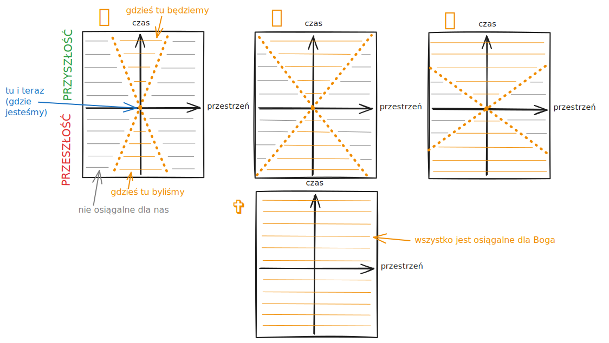

Wolna wola i wszechwiedzący Bóg
6 Grudnia 2024

Jak może człowiek mieć wolną wolę, jeśli Bóg zna nasze przyszłe czyny? (Generalizacją tego pytania jest: Jak może człowiek mieć wolną wolę, jeśli przyszłe czyny człowieka są deterministyczne/przewidywalne?)
To pytanie akurat mnie osobiście bardzo interesowało, nawet jak odpowiedź nie ma żadnego wpływu na moje czyny. Podczas studiów matematyki najbardziej się interesowałem symulacją różnych fenomenów fizycznych, np. jak płynie woda. Jeśli znamy (deterministyczne) prawa fizyki i wiemy, jak w przeszłości wszystko wyglądało, to w teorii jesteśmy w stanie przepowiedzieć przyszłość. Chociaż w prognozie pogody nam to średnio wychodzi czasami... Ale wszechmogące stworzenie, jak np. Bóg, nie powinno mieć z tym żadnych problemów (znane jest to jako "demon Laplace'a"). Jak w takim przypadku ty i ja mamy jeszcze wolną wolę?
Najgorsze jest, że w ogóle nie wiemy, czy do końca mamy determinizm. Jak nie ma determinizmu, czy ma to, ale naprawdę wpływ na naszą wolną wolę? Na mikroskali są efekty kwantowe i na makroskali są czarne dziury, ale czy takie rzeczy mają wpływ na nasze decyzje? Neurobiolodzy na tyle dobrze jeszcze chyba nie rozumieją ludzki umysł, żeby na to pytanie odpowiedzieć. Pomijając teraz fizykę, na której się zresztą i tak nie znam wystarczająco w tej kwestii, to C.S. Lewis rozwiązał problem z wszechmogącym Bogiem przez to, że Bóg jest poza czasem:
"Chrześcijaństwo po prostu" C.S. Lewis
"A oto kolejna trudność, na krórą trafiamy w związku z przekonaniem, że Bóg istnieje w czasie. Każda osoba, która w ogóle wierzy w Boga, wierzy również, że Bóg wie, co ty czy ja zrobimy jutro. Ale skoro Bóg wie, że zrobię to czy tamto, jak mogę być wolny w swoich wyborach? Tu również trudność bierze się z naszego wyobrażenia, że Bóg przesuwa się wzdłuż linii czasu tak samo jak my: z tą tylko różnicą, że On widzi, co się zdarzy przed nami, a my nie. Cóż, gdyby tak było, gdyby Bóg przewidywał nasze uczynki, bardzo trudno byłoby zrozumieć, jak moglibyśmy zachować wolność w ich czynieniu (albo nie-czynieniu). Ale załóżmy, że Bóg jest poza linią czasu i ponad nią. W takim razie to, co nazywamy 'jutrem', byłoby dla Niego widoczne w ten sam sposób, jak to, co nazywamy 'dniem dzisiejszym'. Dla Niego wszystkie dni są 'teraz'. Bóg nie pamięta, że wczoraj zrobiłeś to czy tamto - On po prostu widzi, jak to robisz, bo chociaż ty utraciłeś już swoje 'wczoraj', On ma je nadal. Bóg nie przewiduje twoich jutrzejszych uczynków, a jedynie widzi, jak je spełniasz. Choć dla ciebie jutro jeszcze nie przyszło, dla Niego już trwa. Nigdy nie uważałeś, aby twoje własne uczynki, które spełniasz w tej chwili, były w jakiś sposób mniej wolne przez to, że Bóg wie, co robisz. Cóż, Bóg widzi twoje jutrzejsze uczynki dokładnie w taki sam sposób - bo już teraz jest obecny w dniu jutrzejszym i po prostu widzi, co robisz. W pewnym sensie wie, co zrobisz, dopóki tego nie zrobisz - jednak moment, w którym to zrobisz, to już dla Niego chwila obecna."
Nigdy nie rozumiałem, co to ma znaczyć, że Bóg jest poza czasem. Jednak nie wszystkie rzeczy jesteśmy sobie w stanie wyobrazić. Podczas studiów miałem pojedyncze wykłady z fizyki. Ucząc się o teorii względności, moim zdaniem to ma sens, że Bóg jest poza czasem. Według Einsteina nie ma absolutnego czasu i czas różnie szybko mija dla różnych osób, tzn. czas może inaczej mijać dla Boga niż dla nas. (Szczególnie jeśli Bóg nie ma masy, to Bóg mógłby się przemieszczać z nieskończoną prędkością w czasoprzestrzeni, chyba...)
Podobnie pisze też święty Augustyn, że teraźniejsszość to szczelina między przeszłością a przyszłościa, Bóg się do nas przez nią dostaje i my dostajemy się do Boga. U Boga teraz jest cały czas, u nas teraz to szczelina między przeszłością a przyszłością.
W pewnym sensie można to pytanie filozoficzne porównać do czytania książki. Bóg czyta książkę naszego życia, która już jest napisana. Co prawda, my jako bohaterowie naszej historii nie wiemy jeszcze, co się w naszej przyszłości wydarzy, ale Bóg może przewrócić kilka stron książki, żeby zobaczyć, co się w naszej przeszłości wydarzyło albo w naszej przyszłości wydarzy. Dlatego też czas Boga "czytającego książkę" jest inny niż nasz czas. Ta analogia z czytaniem książki jednak nie odzwierciedla do końca rzeczywistości, bo Bóg nie czyta tylko biernie książkę naszego życia, przynajmniej nie jak zapraszamy go do niego. Zapraszając Boga robimy miejsce dla Boga w naszym życiu i na kartkach papieru naszego życia. Wtedy Bóg nie jest już tylko czytelnikiem, bo może wypełniać tę pustą przestrzeń w naszym życiu pięknymi słowami, które prosto płyną z Jego serca najlepszego autora.